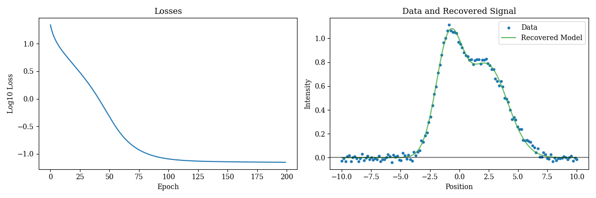
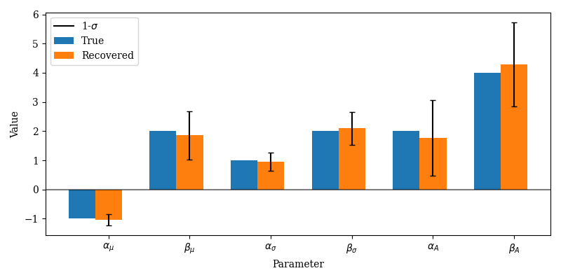
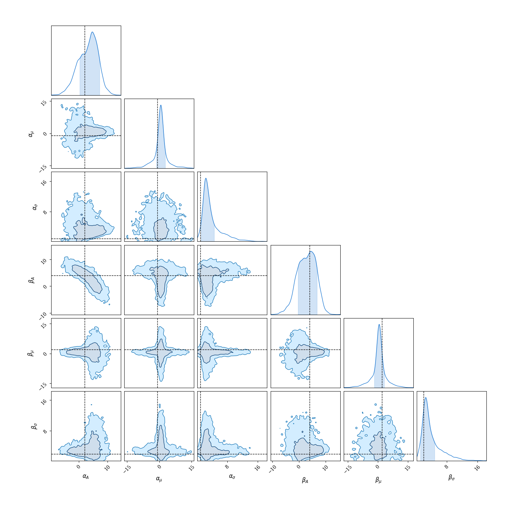

Using Zodiax¤
Resources¤
Zodiax is built from both Jax and Equinox, so if you are unfamiliar with those packages you should go through their docs and tutorials first! Here are some resources to get you started:
Zodiax Basics¤
zodiax.Base is the core class of Zodiax that registers instances of the class as a Pytree which is a native Jax object. Zodiax is also designed to ease working with complex nested class structures often nesseciateted by large physical models common to scientific programming. To do this zodiax.Base has a series of class methods that reflect the jax array update methods, along with introducing the concept of paths that can be used to access and update the leaves of a pytree.
Constructing a Zodiax class¤
Lets examine how these methods work by looking at an example class structure. We will start with a simple class that models a normal distribution and then build a class that contains multiple instances of this class:
import zodiax as zdx
from jax import numpy as np, scipy as scp
class Normal(zdx.Base):
"""Basic class for modelling a normal distribution"""
mean : np.ndarray
scale : np.ndarray
amplitude : np.ndarray
def __init__(self, mean, scale, amplitude):
"""Constructor for the Normal class"""
self.mean = np.asarray(mean, dtype=float)
self.scale = np.asarray(scale, dtype=float)
self.amplitude = np.asarray(amplitude, dtype=float)
def model(self, width=10):
"""Evaluates the normal distribution"""
xs = np.linspace(-width, width, 128)
return self.amplitude * scp.stats.norm.pdf(xs, self.mean, self.scale)
This class simply models a normal distribution with a mean, scale and amplitude, and has a .model() method that is used to actually perform the calculation of the normal distribution.
Declaring attributes: mean : np.ndarray
When using equinox or zodiax the attibutes of the class must be
declared in the class definition to determine the structure of the
pytree that is created when the class is instantiated. This is done by
adding a type hint to the attribute which can be any valid python type
and is not type checked!
.model() vs .__call__()
It is common in Equinox to not define a .model() method but rather a .__call__() method so that the instance of the class can be called like a function, ie:
normal = Normal(0, 1, 1)
distribution = normal(10)
This is a matter of personal preference, however when using Optax if you try to optimise a class that has a .__call__() method, you can thrown unhelpful errors. Becuase of this I recommend avoiding .__call__() methods and instead using .model() method. Similarly, the bayes module of zodiax uses the .model() method to evaluate the likelihood of the model, so it is best to use this method to avoid confusion!
Now we construct a class to store and model a set of multiple normals.
class NormalSet(zdx.Base):
"""Basic class for modelling a set of normal distributions"""
normals : dict
width : np.ndarray
def __init__(self, means, scales, amplitude, names, width=10):
"""Constructor for the NormalSet class"""
normals = {}
for i in range(len(names)):
normals[names[i]] = Normal(means[i], scales[i], amplitude[i])
self.normals = normals
self.width = np.asarray(width, dtype=float)
def __getattr__(self, key):
"""Allows us to access the individual normals by their dictionary key"""
if key in self.normals.keys():
return self.normals[key]
else:
raise AttributeError(f"{key} not in {self.normals.keys()}")
def model(self):
"""Evaluates the set of normal distributions"""
return np.array([normal.model(self.width)
for normal in self.normals.values()]).sum(0)
sources = NormalSet([-1., 2.], [1., 2.], [2., 4.], ['alpha', 'beta'])
This NormalSet class now lets us store an arbitrary number of Normal objects in a dictionary, and allows us to access them by their dictionary key. We can also model the sum of all the normals using the .model() method.
This is all the class set-up we need, now we can look at how to perform different types of optimisation and inference using this model.
Whats with the __getattr__ method?
This method eases working with nested structures and canbe used to raise parameters from the lowst level of the class structure up to the top. In this example it allows us to access the individual Normal objects by their dictionary key. Using this method, these two lines are equivalent:
mu = sources.normals['alpha'].mean
mu = sources.alpha.mean
These methods can be chained together with multiple nested classes to make accessing parameters across large models much simpler!
It is strongly reccomended that your classes have a __getattr__ method implemented as it makes working with nested structures much easier! When doing so it is important to ensure that the method raises the correct error when the attribute is not found. This is done by raising an AttributeError with a message that includes the name of the attribute that was not found.
Lets print this object to have a look at what it looks like:
print(source)
> NormalSet(
> normals={
> 'alpha':
> Normal(mean=f32[], scale=f32[], amplitude=f32[]),
> 'beta':
> Normal(mean=f32[], scale=f32[], amplitude=f32[])
> },
> width=f32[]
> )
Whats with the f32[2]?
The f32[2] is the jax representation of a numpy array. The f32 is the dtype and the [2] is the shape. The jax representation of a scalar is f32[].
Paths¤
Paths are a simple concept that allows us to index a particular leaf of the pytree. The path is a string that is constructed by concatenating the names of the attributes that lead to the leaf. Regardless of the data type of the node, the path is always a string and joined by a period '.', here are some paths for the source class instance:
"normals.alpha.mean"
"normals.alpha.scale"
"normals.beta.amplitude"
Since we have constructed the __getattr__ method, these paths can be simplified to:
"alpha.mean"
"alpha.scale"
"beta.amplitude"
Path Uniqueness
Paths must be unique
Paths should not have spaces in them to work properly with the __getattrr__
Class Methods¤
Zodiax adds a series of methods that can be used to manipulate the nodes or leaves of these pytrees that mirror and expand the functionality of the jax.Array.at[] method. The main methods are get, set, add, multiply, divide, power, min, max, apply and apply_args. The first argument to these methods is a path and methods that manipulate leaves also take in a values parameter. They all essentially follow the same syntax so lets look at some examples of how we would perform basic operations to Zodiax obejcts.
Lets change our 'alpha` source to a unit normal:
sources = sources.set('alpha.mean', 0.)
sources = sources.set('alpha.scale', 1.)
sources = sources.set('alpha.amplitude', 1.)
print(sources.alpha)
> Normal(mean=0.0, scale=1.0, amplitude=1.0)
Wait where did the f32[] go?
This is because we have replaced the jax array with a python float!. It is important to note that the set method does not perform any type checking and will simply replace the leaf with whatever is passed in. Be careful when setting leaves to make sure they are the correct type and that you dont get unexpected errors down the line!
Immutability
Since Jax is immutable, Zodiax is also immutable. All this means is we can not update values in place and instead create a new instance of an object with the updated value.
In regular (mutable) python if we wanted to update the value of some parameter in a class we would do something like this:
sources.alpha.mean = 4
sources.alpha.mean += 2
However in Zodiax this will throw a FrozenInstanceError, what gives! Lets see how we can use Zodiax to achieve the same thing:
sources = sources.set('alpha.mean', 4)
sources = sources.add('alpha.mean', 2)
Multiple Paths and Nesting¤
Zodiax in very felixible in how you can use the paths to access and manipulate the leaves of the pytree. You can use a single path to access a single leaf, or you can use a list of paths to access multiple leaves. You can also use nested paths to access nested leaves. Lets see some examples:
Lets add all of the paths to the means together so we can have a simple variable that we can use to globally shift all of the sources at the same time.
means = ['alpha.mean', 'beta.mean', 'gamma.mean']
shifted_sources = sources.add(means, 2.5)
It's that easy! We can also nest paths in order to perform complex operations simply. Lets say we want to change the scale of both the 'alpha' and 'beta' source together and the 'gamma' source independently.
scales = [['alpha.scale', 'beta.scale'], 'gamma.scale']
values = [2., 4.]
scaled_sources = sources.multiply(scales, values)
This concept apllies to all of Zodiax and can be used with any of its methods. Similarly Zodiax is designed so that every update operations is performed simultaneously. This prevents the unessecary overhead of copy the entire contents of the pytree for every update which is especcially beneficial for large models!
Optimisation & Inference¤
Now that we have an understanding of how to construct and interact with Zodiax classes, lets see how we can use them to perform optimisation and inference on our model. We will start with a simple example of optimising a model using gradient descent, then show how to use the good deep mind gradient processing library Optax, then show how to use numpy to perform inference on the data, and finally show how to use derivates to calcaulte Fisher matrices. In these examples we will use the classes we created above.
Create some fake data
Now lets take a look at how we can recover the parameters of the model using gradient descent. To do this we need to create some fake data which we will do by modelling the normals and adding some noise.
Then we create a new instance of the model that we will use to recover the parameters from the data!
import jax.random as jr
import matplotlib.pyplot as plt
# Make some data by adding some noise
key = jr.PRNGKey(0)
true_signal = sources.model()
data = true_signal + jr.normal(key, sources.model().shape)/50
# Create a model to initialise
initial_model = NormalSet([-3., 3.], [1., 1.], [2.5, 2.5], ['alpha', 'beta'])
Plotting code
# Examine the data and the initial model
plt.figure(figsize=(8, 4))
xs = np.linspace(-sources.width, sources.width, len(data))
plt.scatter(xs, data, s=10, label="Data")
plt.plot(xs, true_signal, alpha=0.75, label="True Signal")
plt.plot(xs, initial_model.model(), alpha=0.75, label="Initial model")
plt.axhline(0, color="k", alpha=0.5)
plt.title("Source Signal and data")
plt.xlabel("Position")
plt.ylabel("Intensity")
plt.legend()
plt.show()

Create a Loss Function
Now lets create a loss function and use the gradients to perform a simple gradient descent recovery of the parameters:
# Now lets construct a loss function
opt_parameters = [
'alpha.mean', 'alpha.scale', 'alpha.amplitude',
'beta.mean', 'beta.scale', 'beta.amplitude'
]
@zdx.filter_jit
@zdx.filter_value_and_grad(opt_parameters)
def loss_fn(model, data):
return np.square(model.model() - data).sum()
# Evaluate loss function once Compile to XLA
model = initial_model
loss, grads = loss_fn(model, data)
@zdx.filter_jit: Just-In-Time (jit) compilation
The @zdx.filter_jit decorator is used to compile the function to XLA, which is done the first time it is called. This is not strictly necessary but it can speed up the function a huge amount and so it generally recommended. The reason we use this function and not the regular @jax.jit is that the Zodiax function will mark any non-optimisable parameters as static, such as strings. This allows us to create classes with extra meta-data that we don't have to manually declare as static!
@zdx.filter_value_and_grad & opt_parameters
Why did we use the @zdx.filter_value_and_grad decorator and what is the opt_pararmeters variable? This filter function operates similarly to the @zdx.filter_jit decorator by preventaing gradients being taken with respect to strings and lets us specifiy exactly what parameters we want to optimise. In this case we want to optimise the parameters of the individual normals, so we pass a list of of paths to those parameters!
Simple Gradeint Descent¤
In gradient descent we update our parameters towards the minimum of the loss function by taking a step in the opposite direction of the gradient (towards the minimum). The size of this step is controlled by the learning rate, which is a hyper-parameter that we have to tune. In this case we have set the learning rate to 1e-2 and applied this learning rate to all of the parameters in the model using the inbuilt Zodiax .multiply function.
losses = []
for i in range(200):
loss, grads = loss_fn(model, data)
step = grads.multiply(opt_parameters, -1e-2)
model = zdx.apply_updates(model, step)
losses.append(loss)
How easy was that! Now lets examine the results:
Plotting code
plt.figure(figsize=(12, 4))
plt.subplot(1, 2, 1)
plt.plot(np.log10(np.array(losses)))
plt.title("Losses")
plt.xlabel("Epoch")
plt.ylabel("Log10 Loss")
plt.subplot(1, 2, 2)
plt.scatter(xs, data, s=10, label='Data')
plt.plot(xs, model.model(), alpha=0.75, label='Recovered Model', c='tab:green')
plt.axhline(0, color="k", alpha=0.5)
plt.title("Data and Recovered Signal")
plt.xlabel("Position")
plt.ylabel("Intensity")
plt.legend()
plt.show()

Optax¤
One of the other benfeits of using Zodiax is that our objects natively integrate in to the Jax optmisation ecosystem. For example we can use the Google DeepMind gradient processing libaray Optax in order to gain access to a series of gradient optimisation algorithms.
We can re-use the loss function from above, so lets have a look how we can use some Optax optimisers:
import optax
# Get optax objcets
model = initial_model
optimiser, state = zdx.get_optimiser(model, opt_parameters, optax.adam(1e-1))
losses = []
for i in range(200):
loss, grads = loss_fn(model, data)
step, state = optimiser.update(grads, state)
model = zdx.apply_updates(model, step)
losses.append(loss)
zdx.get_optimiser(model, parameters, optimisers)
The zdx.get_optimiser function takes a model, a list of parameters to optimise and list of optimisers for each of the those parameters and returns an optax optimiser and an optax state object. This convenience function simply ensures that the we format our model correctly and map our optimisers correctly for Optax! These objects together are used to implement more complex gradient descent algorithms such as Adam, RMSProp, etc.
Easy! Lets examine the results
Plotting code
plt.figure(figsize=(12, 4))
plt.subplot(1, 2, 1)
plt.plot(np.log10(np.array(losses)))
plt.title("Losses")
plt.xlabel("Epoch")
plt.ylabel("Log10 Loss")
plt.subplot(1, 2, 2)
plt.scatter(xs, data, s=10, label='Data')
plt.plot(xs, model.model(), alpha=0.75, label='Recovered Model', c='tab:green')
plt.axhline(0, color="k", alpha=0.5)
plt.title("Data and Recovered Signal")
plt.xlabel("Position")
plt.ylabel("Intensity")
plt.legend()
plt.show()

Fisher Inference¤
The differentiable nature of Zodiax objects also allows us to perform inference on the parameters of our model. The Laplace approximation assumes that the posterior distribution of our model parameters is a gaussian distribution centred on the maximum likelihood estimate of the parameters. Luckily we can use autodiff to calculate the hessian of the log likelihood function and invert it to get the covariance matrix of the posterior distribution! Zodiax has some inbuilt functions that can be used to calculate the covariance matrix of a model
Fisher and Covariance Matrices
The covariance matrix \(\vec{\Sigma}\) describes the covariance between the parameters of a model. Under the Laplace approximation, we can calculate the covariance matrix using autodiff:
where \(\mathcal{L}\) is the likelihood function and \(\rho\) is the prior function. In this example we will assume a flat prior, so \(\rho(\vec{X}) = 1\).
# Define the paramters we want to marginalise over
parameters = ['alpha.mean', 'beta.mean',
'alpha.scale', 'beta.scale',
'alpha.amplitude', 'beta.amplitude']
# Get the covariance matrix
covariance_matrix = zdx.covariance_matrix(model, parameters,
zdx.chi2_loglike, data, noise=1/50)
deviations = np.abs(np.diag(covariance_matrix))**0.5
Lets examine the results:
Plotting code
true_values = sources.get(parameters)
recoverd_parameters = model.get(parameters)
formatted = [r"$\alpha_\mu$", r"$\beta_\mu$",
r"$\alpha_\sigma$", r"$\beta_\sigma$",
r"$\alpha_A$", r"$\beta_A$"]
plt.figure(figsize=(8, 4))
xs = np.arange(len(parameters))
plt.bar(xs, true_values, tick_label=formatted, width=0.3, label='True')
plt.bar(xs+0.33, recoverd_parameters, tick_label=formatted, yerr=deviations,
width=0.33, label='Recovered', capsize=3)
plt.plot([], c='k', label='1-sigma')
plt.axhline(0, color="k", alpha=0.5)
plt.legend(loc=2)
plt.xlabel("Parameter")
plt.ylabel("Value")
plt.tight_layout()
plt.savefig("fisher_fit")
plt.show()

Fantastic, this method gives us a great way to estimate the uncertainty in our recovered model parameters!
Numpyro¤
Numpyro is a probabailistic programming library that allows us to perform efficient posterior sampling algorithms. Numpyro is also built in Jax and so is designed to that take advantage of differentiability in order to perform extremely high-dimensional inference!
Lets see how Zodiax can be integrated with Numpyro to perform posterior sampling on our model parameters.
import numpyro as npy
import numpyro.distributions as dist
import chainconsumer as cc
def sampling_fn(data, model):
paths = ["alpha.mean", "beta.mean",
"alpha.scale", "beta.scale",
"alpha.amplitude", "beta.amplitude"]
# Define priors
values = [npy.sample(r"\alpha_\mu", dist.Normal(0, 5)),
npy.sample(r"\beta_\mu", dist.Normal(0, 5)),
npy.sample(r"\alpha_\sigma", dist.HalfNormal(5)),
npy.sample(r"\beta_\sigma", dist.HalfNormal(5)),
npy.sample(r"\alpha_A", dist.Normal(0, 5)),
npy.sample(r"\beta_A", dist.Normal(0, 5))]
# Sample from the posterior distribution
with npy.plate("data", len(data)):
model_sampler = dist.Normal(
model.set(paths, values).model().flatten()
)
return npy.sample("Sampler", model_sampler, obs=data.flatten())
Numpyo requires a 'sampling' function where you assign priors to your parameters and then sample from the posterior distribution. The syntax for this can be seen above. We then sample the data using a 'plate' and define a likelihood which in this case is a normal.
We then need to define our sampler which in this case is the No U-Turn Sampler (NUTS). NUTS is a variant of Hamiltonian Monte Carlo (HMC) that is designed to be more efficient and robust, and takes advantage of gradients to allow high dimensional inference.
# Using the model above, we can now sample from the posterior distribution
# using the No U-Turn Sampler (NUTS).
sampler = npy.infer.MCMC(
npy.infer.NUTS(sampling_fn),
num_warmup=5000,
num_samples=5000,
)
%time sampler.run(jr.PRNGKey(0), data, model)
Fantastic now lets have a look at our posterior distributions!
Plotting code
chain = cc.ChainConsumer()
chain.add_chain(sampler.get_samples())
chain.configure(
serif=True, shade=True, bar_shade=True, shade_alpha=0.2, spacing=1.0, max_ticks=3
)
fig = chain.plotter.plot()
fig.set_size_inches((15, 15))
